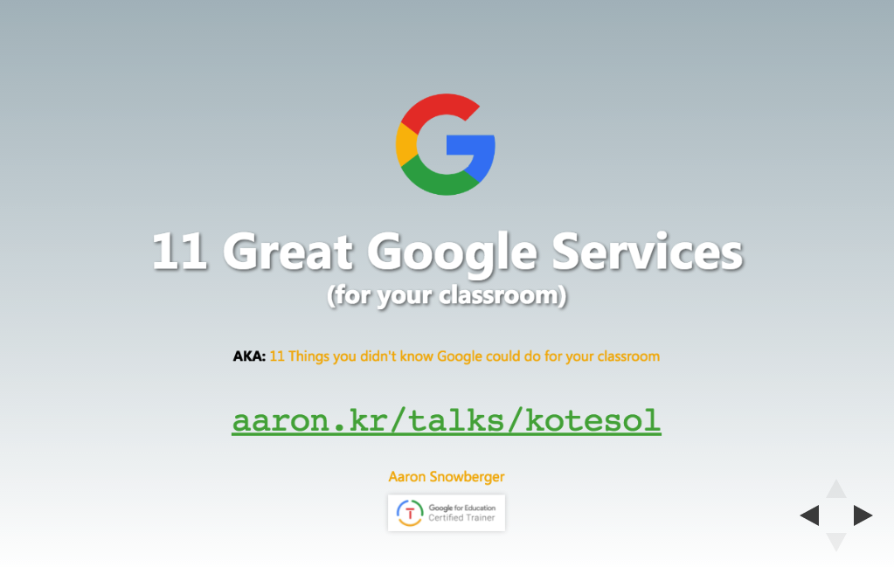

Talks
- 2017
-  11 Great Google Services (for your classroom) Jeonju KOTESOL Conference 2017 11 November 2017
- Google Classroom 101 KOTESOL Int'l Conference 2017 21 October 2017
- G Suite for Education Training GPA HS Teacher Training Seminar 16 August 2017
- Teacher Tech Tips GPA HS Teacher Training Seminar 17 February 2017
- 2015
- A Roadmap for WordPress as LMS KOTESOL National Conference 2015 30 May 2015
- Computer Science as a Career GPA HS Career Day 16 April 2015
- WordPress in your Classroom as an LMS Jeonju KOTESOL Workshop 14 March 2015
- A Comprehensive Overview of WP Site Owner Roles Jeonju WordPress Meetup 7 March 2015
- Open Source, WordPress, & the Community Seoul WordPress Grand Meetup 2015 28 February 2015
- WordPress Overview Jeonju WordPress Meetup 24 January 2015